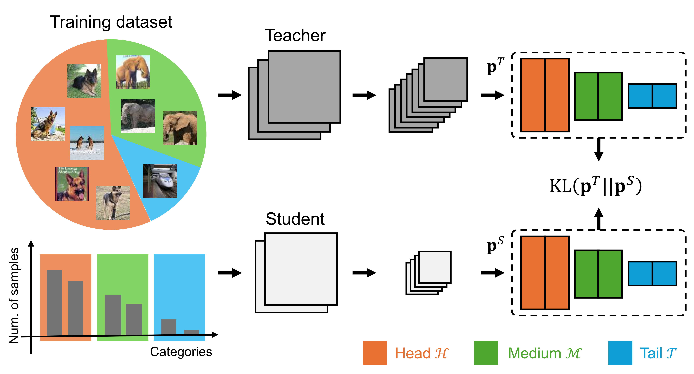
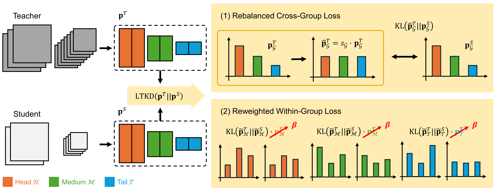
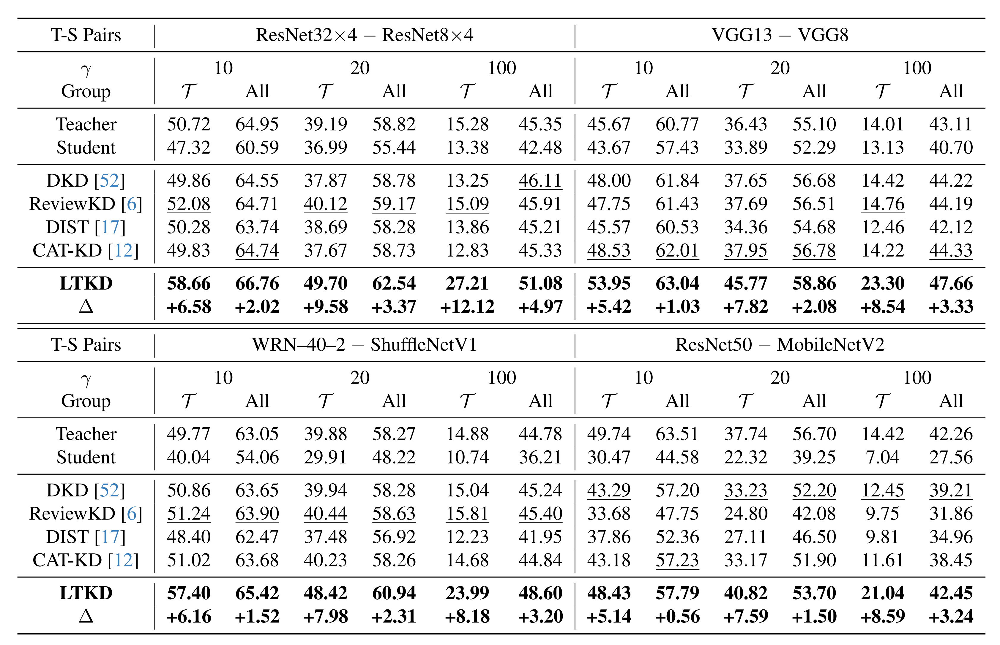
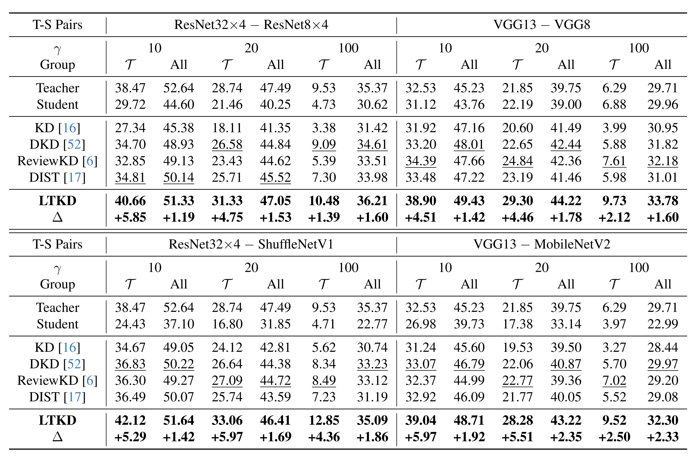
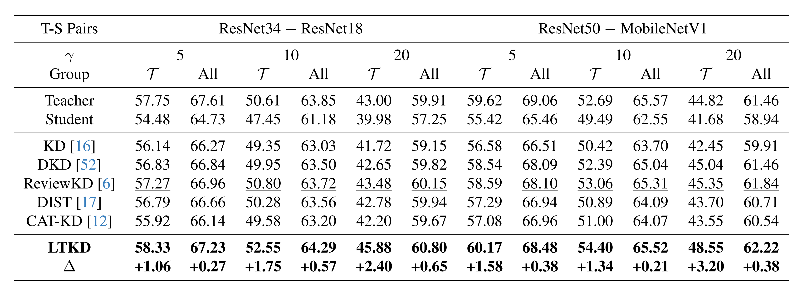

Conventional knowledge distillation, designed for model compression, fails on long-tailed distributions because the teacher model tends to be biased toward head classes and provides limited supervision for tail classes.

Overview of standard KD on long-tailed distributions.
We propose Long-Tailed Knowledge Distillation (LTKD), a novel framework that reformulates the conventional objective into two components: a cross-group loss, capturing mismatches in prediction distributions across class groups (head, medium, and tail), and a within-group loss, capturing discrepancies within each group's distribution. This decomposition reveals the specific sources of the teacher's bias. To mitigate the inherited bias, LTKD introduces (1) a rebalanced cross-group loss that calibrates the teacher's group-level predictions and (2) a reweighted within-group loss that ensures equal contribution from all groups.

Overview of the proposed Long-Tailed Knowledge Distillation (LTKD).
Extensive experiments on CIFAR-100-LT, TinyImageNet-LT, and ImageNet-LT demonstrate that LTKD significantly outperforms existing methods in both overall and tail-class accuracy, thereby showing its ability to distill balanced knowledge from a biased teacher for real-world applications.
Accuracy (%) on tail and overall classes for CIFAR-100-LT.

Accuracy (%) on tail and overall classes for TinyImageNet-LT.

Accuracy (%) on tail and overall classes for ImageNet-LT.

@InProceedings{kim2026distilling,
title={Distilling Balanced Knowledge from a Biased Teacher},
author={Kim, Seonghak},
booktitle={Proceedings of the IEEE/CVF Conference on Computer Vision and Pattern recognition},
year={2026}
}{kind=link}